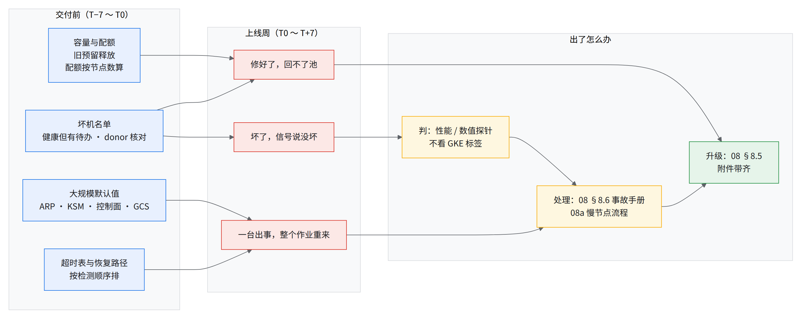

08c 上线周的生产事故：会出什么、怎么提前防、出了怎么判
要解决什么
- 整 pod 交付之后的头一周，问题来得最密。
- 本章把上线周常见的问题归成九类，每类写清：怎么认出来、我们（Google 侧）有什么办法、你要配合什么。交付前能做的预防动作单独列出（§8c.3）。
难在哪
- 芯片坏得不多，坏了以后的事才拖进度。 修好的机器回不了池，比新坏的机器更影响可用 cube 数。
- 健康信号可能一直报 HEALTHY。 主机限频、片内链路降速时，GKE 仍可能显示健康。
- 一台主机出事，会被超时和驱逐策略放大成整个作业重来。
💡一句话结论
- 上线周的事故分三种后果，每种都有交付前能做的事：
- 坏了，信号说没坏 → 健康靠性能和数值探针判，不靠 GKE 标签（08a、经验教训第 48 条）。
- 修好了，回不了池 → 交付前请 Google 确认备用整机（donor），列出「健康但有待办」的 cube 清单，每天对一次「已修未回池」表（08 §8.4）。
- 一台出事，整个作业重来 → 照各层超时表（07 §7.2）审一遍恢复路径上每一步的默认动作。
- 能不能守住可用 cube 数，看修复多快，不看故障率。
- 很多默认值要到整 pod 这个规模（2,304 个节点）才暴露问题（ARP 表、kube-state-metrics 内存、GCS 后端 QPS 限额、控制面吞吐、启动盘 IOPS）。照 01 §1.4 的默认值表在交付前一次性调好。
- 出了事怎么联系 Google：08 §8.5；具体事故的止血步骤：08 §8.6。
总图

读图：
- 左边四项都是交付前能做完的。
- 中间三种后果对应 §8c.2 表里的各类问题。
8c.1上线周风险地图
T0 = reservation 生效时刻。
| 时段 | 会出什么 | 提前防在哪一章 |
|---|---|---|
| T−1 ～ T0 | 旧预留删除卡住，挡住新预留生效；启动盘 IOPS 等配额不够 | 01 §1.1、01 §1.4、经验教训第 4 条 |
| T0 | 交付时就有部分 sub-block 降级；控制面要先扩容才撑得住大规模建 pod | 01 §1.2、经验教训第 3 条、经验教训第 53 条 |
| T+1 ～ T+2 | GCS 启动阶段 429；admission webhook 超时，作业提交失败；MTC 组件出错，作业反复重启；单台主机限频、GKE 仍报健康；缓存出口打满 | 06a、经验教训第 60 条、07 §7.1、08a |
| T+3 | 一台主机存档挂住 → 磁盘压力 → 整个作业被驱逐；健康 cube 数下滑 | 经验教训第 42 条、经验教训第 44 条、经验教训第 3 条 |
| T+4 ～ T+5 | 检查点协调组件断连不重试，恢复变慢；HBM 不可纠正错误在监控里看不见；缺件拖慢维修；修好的机器卡在测试里回不了池；kube-state-metrics OOM，作业指标丢失 | 经验教训第 62 条、经验教训第 54 条、经验教训第 50 条 |
| T+6 ～ T+7 | 一台主机 NotReady 后，作业被撒到多个物理 slice、全体挂在初始化；修回的 cube 复发 | 经验教训第 42 条、经验教训第 45 条、经验教训第 48 条 |
规律：T0 之前的问题全是「没提前办」，T+3 之后的问题大多是「修复链路慢」和「放大」。第一周每天都会有新问题，交付团队要按每天至少一次的节奏对状态（08 §8.4）。
8c.2上线周九类问题：怎么认、我们有办法、你配合什么
| 问题 | 怎么认出来 | 我们有办法 | 你要配合什么 |
|---|---|---|---|
| A 容量与预留：健康 cube 数下滑 | 每天同一时刻、同一系统记一次「健康且能成片」的 cube 数，看趋势；不同系统的口径可能差几个 cube | Google 侧跟踪每个降级 cube 的维修进度，按优先级恢复 | 交付前确认旧预留已释放、配额按节点数提前申请（01 §1.1–1.4）；约定以哪个系统的数为准；数量明显下滑时开 case，附当前健康数和降级 cube 清单 |
| B 硬件：坏了，信号说没坏 | 多片作业步时整体变慢，GKE 仍报 HEALTHY；按片看集合通信延迟，缩到一两片（08a §8a.4） | Google 侧可隔离并修复确认有问题的 cube | 跑性能探针：准入测、每周轮测、任务里盯步时（08a §8a.3）；确认后 cordon 整 cube，开 case 附步时对比和离线复测结果 |
| C 维修：修好了，回不了池 | 健康 cube 数持续不回升，新故障却不多；同一台机器在同一维修阶段停留超过 8 h [推断] | Google 侧有缺件改整机置换、卡住的维修手工放回等处理路径 | 交付前请 Google 确认所在 superpod 有备用整机（donor）；每天对一次「已修未回池」表（08 §8.4），超过 12 h 开 case |
| D GKE 控制面与调度 | 大规模建 pod 慢或失败；提交报 admission webhook timeout；作业重新准入后全体挂在初始化 | Google 侧可为大集群扩控制面规格、调高 pod 吞吐 | 建集群前提出高 pod 吞吐需求；调 CPU 节点的 ARP 参数、给 konnectivity-agent 配反亲和；JobSet 加 FailureRecoveryPolicy |
| E MTC 与检查点 | 作业反复重启、日志里 rank = -1（MTC 的 rank server 没给 pod 分到编号）；节点 DiskPressure 后大批驱逐；作业 Completed 但 step 没到目标 | Google 侧已在 MTC 组件新版本里修复已知问题 | 用带修复的 MTC 版本，rank server 放专用大节点；生产镜像 ulimit -c 0；抢占时存盘、exit 0 不算成功（07 §7.6、经验教训第 44 条、经验教训第 42 条）；上线前在目标规模做一次故障注入（07a） |
| F GCS 与存储配额 | 启动阶段 429 / RESOURCE_EXHAUSTED；缓存出口打满 | Google 侧可调整后端 QPS 限额和缓存容量 | 所有 gcsfuse 挂载写 client-protocol: grpc（06a §6a.4）；遇到 429 先查协议再申请配额；配额按并发启动的作业规模估、交付前提；检查点转换时指定 sharding |
| G MegaScale 与超时 | 作业所有主机停在 make_tpu_client 或初始化，不报错 |
Google 侧已整理各层超时和它们的触发先后 | 照 07 §7.2 超时表核一遍；jax_distributed_initialization_timeout 调到 300–600 s（见经验教训第 44 条）；初始化挂住先查是不是撒片（同一个作业的 pod 落到了多个物理 slice 上），必要时手动 suspend |
| H 数值与 SDC（静默数据错误：算错了但不报错） | loss 曲线或数值 canary 偏离，同期没有维护事件 | Google 侧可查硬件遥测，协助定位嫌疑 cube | 生产训练跑数值 canary（见经验教训第 26 条）；隔离嫌疑 cube 复测；开 case 附偏离出现的 step 和涉及的 cube |
| I 遥测与可观测性 | 某个告警从来没响过；监控组件反复重启、指标断档 | Google 侧可为大集群调高监控组件的资源 | 交付前拿已知坏机或故障注入验证每个告警「看得见」（08b）；Goodput 用新版库，不用已弃用的 step deviation 接口；以自建观测为主 |
各类问题的判法与处置细节
上表已有的不再重复，下面只补每类的典型现象、判据和处置细节。根因在 Google 侧的（维修、容量、硬件），这里只写你会看到什么、你做什么；需要 Google 动手的，开 case 并同步 account team（08 §8.5）。
A 容量与预留
- 现象：交付前旧预留删除卡住，挡住新预留生效；启动盘 IOPS 是固定配额，自助提额会被拒。交付当天就可能有部分 sub-block 降级，之后健康 cube 数一路下滑，修好一批会回升，过一两天又掉。
- 提前防：
- 旧预留提前 48 h 以上释放，并确认上面的 VM 已经 TERMINATED。删预留前没先终止实例，VM 会停在 STOPPING，删除跟着卡住（拆预留的顺序另见经验教训第 4 条）。
- 配额按「节点数 × 单节点需求」算，交付前一周提。启动盘 IOPS 举例：2,304 节点 × 每盘 4,200 IOPS ≈ 9.68M；即便每块盘取最低档 3,000 IOPS 也要约 6.9M，仍超过默认上限 6M。
- 交付前列出还在维修队列里的机器，每台写 owner 和 ETA。
- 验收看「健康且能成片」的 cube 数，写进交付条件：低于约定线加余量就不签交付。
- 怎么判：同一时刻，不同系统报的健康 cube 数可能差几个（例如光链路被摘下的 cube，一个系统算、一个不算）；合同口径如果把降级（DEGRADED）cube 也算进健康，「达标」不等于排得满任务。两个口径都要拿到。看趋势不看单点。
- 处置：低于约定线就开 case 要求按 P0 处理，附当前健康数、降级 cube 清单、每台卡在哪个维修阶段（08 §8.5 附件表）。接近线但还没破：按 C 类盯「已修未回池」表。
B 硬件：坏了，信号说没坏
- 现象：
- 一台主机电压传感器读数错（读数是正常值的数倍），算出的功率逼近上限而限频；多片作业步时变成原来的约 20 倍，cordon 嫌疑 cube 后恢复。GKE 全程 HEALTHY。
- 一个 cube 有两个 ICI 端口报 fatal link event，cube 内 all-reduce 慢约 25%，GKE 仍报健康。
- 修回的 cube 跑了一个半小时又坏；底层健康信号先变 UNHEALTHY，GKE 的标签约 3 h 后才跟上。
- 为什么看不见：GKE 的健康检查只看 PCIe、存活、fatal 错误和 ICI，看不到性能退化；限频目前没有自动检测。使用方跑长时间 GEMM / HBM 测试兜底（见经验教训第 48 条）。交付前被点过名的 cube 单独长测（规律八）。
- 怎么判：挪走对比 + 离线复测才定案。挪走变快，可能只是切片重组了（08a §8a.5）。
- 处置：cordon 整 cube → 重算 Kueue 配额 → 开 case 请 Google 隔离维修 → 修回后走准入（08a §8a.6）。准入通过不等于能进大作业。同一 cube 同一症状第二次报修，在 case 里明确要求换件，不接受只重新插拔：实际案例里一个 cube 三次都只做了重插，三次都复发。
C 维修：修好了，回不了池
- 现象：修好的机器迟迟回不了池。缺件又没有备用整机可换时，单台可能等上几天；整机置换做完，到重新可调度还要约 6–7 h；修好的机器卡在链路测试里约 8 h 出不来。
- 怎么判：
- 同一台机器在同一阶段停留超过 8 h，判为卡住，而不是在修 [推断：正常的链路测试 12 min 内跑完，卡住时约 8 h]。
- 健康 cube 数持续不回升、新故障却不多：问题在修复链路，不在故障率（规律四）。
- 处置：
D GKE 控制面与调度
- 现象：
- 2,304 节点集群要求每秒建约 1,000 个 pod，默认控制面规格撑不住，要先扩容；实际从提出到就绪用了约 3 天，所以至少在交付前 3 天提 [推断]。
- admission webhook（Kueue、JobSet）i/o timeout，大批提交失败。根因是几十个 konnectivity-agent 挤在 3 台 CPU 节点上，ARP 表超过
gc_thresh3=1024溢出；副本数偏多，是因为 autoscaler 把带 taint 的 TPU 节点也算进了副本基数。 - 一台主机 NotReady，重新准入后 pod 被撒到多个物理 slice 上，整个作业挂在
make_tpu_client。 - slice FAILED 时 message 为空；人为 kill 注入也可能被报成芯片驱动错误。
- 怎么判：
- 提交报 webhook timeout：看 CPU 节点上 konnectivity-agent 副本数和 ARP 表（
ip neigh | wc -l对比gc_thresh3）。 - 重新准入后全体挂在初始化：查每个 child Job 的 pod 落在几个物理 slice 上，超过 1 个就是撒片（08 §8.6 C）。
- slice FAILED 不带 message：别直接当硬件故障报，先对一遍 kill 注入和维护事件。
- 提交报 webhook timeout：看 CPU 节点上 konnectivity-agent 副本数和 ARP 表（
- 处置：
- ARP：调大 sysctl
gc_thresh，再 rollout restart konnectivity-agent。 - 撒片：suspend 作业，等旧 pod 全部清掉再恢复，别等初始化超时自己暴露（见 G）。JobSet 的 FailureRecoveryPolicy 让 Terminating 的旧 pod 90 s 后标成 Failed，避免 TAS 退回贪心放置。
- ARP：调大 sysctl
E MTC 与检查点
- 现象：
- MTC rank server 15 min 内给所有 pod 的 rank 都是 -1，作业无限重启。
- 一台主机的异步存档挂约 20 min，接着 SIGABRT 写 core dump，节点 DiskPressure，整个作业被驱逐（放大链见 §8c.3 规律七）。
- MTC coordinator 遇到断连不重试，上千个 peer 白等 300 s。
- 大量主机同时读一份没分片的检查点，撞上缓存的带宽上限。
- SIGTERM 送到训练进程后 exit 0，JobSet 判 Completed；抢占时从不存盘，训练会静默永久停止。
- 为什么要在目标规模上测：这类问题在较小规模（数百节点）上复现不出来，整 pod 规模上才出。
- 怎么判：
- 作业反复重启、rank = -1：先看 rank server 所在节点的资源（见经验教训第 62 条）。
- 节点 DiskPressure + 大批驱逐：先查有没有 core dump 落盘。
- 作业 Completed 但 step 没到目标：查退出码是不是被 SIGTERM 之后的 0。
- 处置：照 08 §8.6 D 关 core dump、清盘、从检查点重启；TensorBoard 和训练放同一区域；交付前和 Google 确认 MTC 组件用的是修复版。
F GCS 与存储配额
- 现象：启动阶段 429，每次重启损失 15–20 min；缓存出口和容量不够，要扩；配额扩完以后，新建的数据桶照样 429。最后这条的真正原因是挂载时漏了
client-protocol: grpc，请求走 HTTP 经前端，撞上的是单桶请求速率上限，扩项目级配额碰不到它（06a §6a.4）。 - 怎么判：遇到 429 先画数据路径：谁在读写、用什么协议（gRPC 直连还是 HTTP 经前端）、撞的是项目级 QPS 还是单桶限额，再决定要不要申请配额（规律六）。
- 写检查点走的是另一条路：TensorStore 用 JSON/HTTP 经前端，约占 25% 的字节，不经过 Anywhere Cache，扩缓存帮不到它。
- MTC 场景下大量 404：是元数据请求，用
negative-ttl-secs压（06a §6a.4）。
- 处置：协议没走 gRPC 就改挂载参数，不用改配额。真是项目级 QPS 不够，开 case 申请，写成「从 A 调到 B（增量 B−A）」，写明单位是 QPS 还是带宽，附峰值和并发启动的作业规模。
G MegaScale 与超时
- 现象：跨片网络本身不是源头，但作业级损失的结局常由 MegaScale 的超时决定：
- GCS 限流 → 部分主机落后 → 跨片同步点等满 5 min → MegaScale 的 hang 检测终止整个作业。
- 存储挂起约 11 min 才被 MegaScale 发现。
- 拓扑协调返回 INVALID_ARGUMENT 也照样重试，直到
megascale_topology_discovery_timeout（默认 4,000 s）；全体主机静默挂住。
- 为什么：这些默认超时是按瞬时网络抖动调的，分不出「永远不会好」的错误 [推断]。
- 怎么判 / 处置：所有主机停在初始化、没有报错时，先查是不是撒片（D），别等满 4,000 s；手动 suspend，清掉旧 pod 后恢复。拓扑发现超时要不要调低，先和 Google 确认。
H 数值与 SDC
- 现象：训练结果出现偏差，之后嫌疑 cube 变 UNHEALTHY，期间没有维护事件。
- 一个坑：XLA 的 SDC checker 开关一打开，即便不做重复校验也会改变数值，因为开关本身就改变了融合和片上内存（VMEM）的决策。所以低开销的在线 SDC 检测开不了；做精度对齐或逐位重放时，两边的 SDC checker 开关必须一致。
- 两条防线同时失效：疑似 SDC 要靠硬件遥测定位，可 HBM 不可纠正错误的计数可能恒为 0（见 I）。
- 处置：先隔离嫌疑 cube 复测；开 case 附偏离出现的 step、涉及的 cube、同期健康事件，要求 Google 查硬件遥测。
I 遥测与可观测性
- 现象：
- 真实发生的 HBM 不可纠正错误，对应指标没有任何序列：上报的主机名多了一段后缀，大部分实例对不上。
- kube-state-metrics 默认内存上限 500Mi，在两千多节点 / 几万 pod 的集群里反复 OOMKilled，几百次重启，JobSet 相关指标全丢。
- Goodput 库算出的值比实际偏高（disruption 数等于 step 数）。
- 健康状态滞后约 3 h；ICI 降速、限频，GKE 都不报（见 B）。
- 怎么判：指标读数恒为 0，按「没有这个指标」处理；一个告警从来没响过，先当它是瞎的，用已知坏机或故障注入做对照验证，再信它。
- 处置：照 08b 自建观测，Google 侧的指标只作佐证；kube-state-metrics 请 Google 为大集群调高资源；Goodput 换新版库。
补充：跨区依赖
- 现象：TensorBoard 实例在一个区域、日志目录在另一个区域，跨区写返回 503，存档慢 6–7 倍，作业约每 7 min 就闲约 5 min。
- 提前防：上线前把 TensorBoard、镜像仓库、日志桶逐个对一遍区域，写桶的对象逐个核，不凭「应该在同区」（见经验教训第 61 条）。
超时值和默认上限随版本变化，按自己用的版本重核。
8c.3跨事件规律 → 预防动作
| # | 规律 | 预防动作 | 手册位置 |
|---|---|---|---|
| 一 | 坏了，健康信号说 HEALTHY | 坏节点按性能和数值探针判，不按 GKE 标签判 | 08a、经验教训第 48 条 |
| 二 | 超时之间没有排序 | 交付前出一张按检测顺序排的超时表，内层短于外层 | 07 §7.2 超时表 |
| 三 | 到这个规模才暴露的默认值 | 按节点数列出全部默认上限，交付前一次调好 | 01 §1.4 默认值表 |
| 四 | 修好了，回不了池 | 每天对一次「已修未回池」表；超过 12 h 开 case | 08 §8.4、经验教训第 50 条 |
| 五 | 同一个数，几个系统各说各话 | 交付时约定以哪个系统的数为准，写进对齐清单 | 经验教训第 3 条、09 D01 |
| 六 | 常见误判：先去扩配额，实际原因不在配额 | 先画数据路径（谁、什么协议、走哪个前端），再判断撞的是哪个限额；申请里写明单位 | 06a |
| 七 | 一台出事，放大成整个作业重来 | 审一遍恢复路径上每一步的默认动作（驱逐宽限、重试、超时） | 07 §7.2、经验教训第 42 条 |
| 八 | 交付前被点过名的 cube，交付后再出事 | 「健康但有待办」名单上的 cube 交付时单独长测，或先不放进生产池 | 01 §1.2 |
| 九 | 修复要靠人手，规程不全 | 交付前向 Google 要齐现有规程（维护指南、整机置换流程、巡检工具），引用不重写 | 09 D18 |
规律七：放大链
| 起点 | 放大链 | 结局 |
|---|---|---|
| 1 台主机存档挂住 | SIGABRT → core dump → DiskPressure → TAS 对磁盘压力的驱逐宽限 0 s | 整个作业的 pod 全部被驱逐，中断近 2 h |
| 1 台主机 NotReady | 旧 pod 卡在 Terminating → TAS 退回贪心放置 → 撒片 → 拓扑发现按 4,000 s 超时重试 | 全部主机挂住约 40 min，手动 suspend 才止住 |
| 部分主机被 GCS 限流 | 跨片同步等满 5 min → MegaScale 终止作业 | 每次重启损失 15–20 min |
| 1 个 MTC coordinator 断连 | 不重试、不往外传播 | 上千个 peer 白等 300 s |
为什么一台出事只能整片重来：每片的形状把所占 cube 的 16 个节点全部用满，节点级替换（TASFailedNodeReplacement）没有空节点可换。
检查点
做完了（对应 README 交付清单 H）
- T−7 之前：旧预留释放并确认 VM TERMINATED；启动盘（HDB）IOPS、GCS QPS、Anywhere Cache 配额按节点数算好、已提
- T−5 之前：拿到「健康但有待办」的 cube 清单，名单上的 cube 单独长测或不进生产池；Google 确认 donor 数不为 0
- 建集群前：高 pod 吞吐参数、CPU 节点 ARP 表上限（
gc_thresh）、konnectivity 反亲和、kube-state-metrics（KSM）内存 - 上第一个生产任务前：超时表按使用方版本核过；
ulimit -c 0；FailureRecoveryPolicy；所有 gcsfuse 挂载client-protocol: grpc - 上线周每天：健康 cube 数（写明哪个系统）、「已修未回池」表
说得出（先自己答，再点开对答案）
为什么「健康 cube 达标」不等于排得满任务？
不同系统口径不同，有的把降级也算进健康为什么可用 cube 数掉得多，新坏的机器却不多？
修好的回不了池：缺件没有备用整机、卡在测试里、维修动作没人执行为什么一台主机存档挂住，整个作业要重来？
core dump → DiskPressure → 驱逐宽限 0 s，全部 pod 被驱逐；整 cube 的形状没有空节点可换遇到 GCS 429 为什么不先申请配额？
可能是没走 gRPC、撞的是单桶限额作业所有主机挂在初始化、不报错，先查什么？
是不是撒片；MegaScale 默认要重试很久才放弃
交棒：回 README 交付清单 H 打勾；交付条件（健康 cube 数以哪个系统为准、维修多久回池）收进 09 交付前对齐清单；出事时按 08 §8.6 处理、按 08 §8.5 联系 Google。